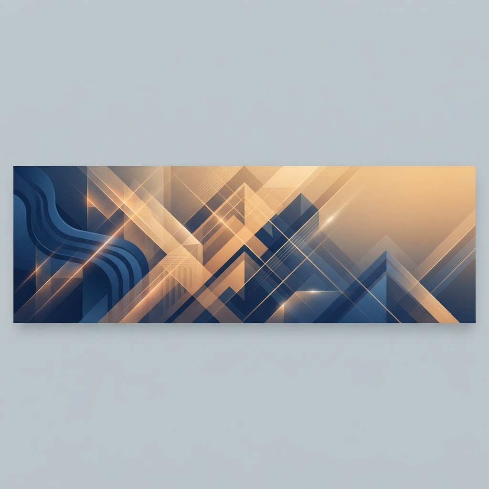

የሚንሰጣቸው አገልግሎቶች
- በአንድ ዕቅድ በአንድ ሪፖርትና አንድ ምዘና ስርዓት መመራት
- የፓርቲ አሰራር መመሪያዎች ስራ ላይ መዋሉን ማረጋገጥ
- የኢንስፔክሽን ስራ በየሩብ ዓመት በፓርቲ ተቐማት ላይ መስራት
- የሱፐርቪዝን ስራ በህብረት ኮሚቴ ማካሄድ
- የተሰሩ የኢንስፔክሽን እና የሱፐርቪዥን ስራ ግብረመልስ መስጠት
- የግብረ መልስ ግብረ መልስ መቀበል መስተካከሉን ማረጋገጥ
- በየ6 ወር የምዘና ስርዓት በማድረግ መልሶ እንዲደራጅ መስራት
- የህብረት ኮንፍራንስ በተቀመጠው ግዜ መሰረት ስለመከናወኑና 50+1 መሆኑን ማረጋገጥ እንዲሁም ማሞላት የሚገቡ ዝርዝር ነጥቦችን እንዲያሞሉ ማድረግ
- የቤተሰብ ውይይት በወቅቱና 50+1 አባላት በመገኜት ስለመወያየታቸው ማረጋገጥ
- የአባላትን አቤቱታ መቀበል ማዳመጥና ምላሽ መስጠት
- የመልካም አስተዳደር እና ብልሹ አሰራር ላይ ትግል እንዲደረግ ማድረግ
- ለፓርቲ አባላት እና ለኮሚሽን ኅብረቶች በተናጥልና በቅንጅት የአቅም ግንባታ ስልጠና መስጠት
- እሴት ጨማሪ ተግባራት ላይ እና የአደባባይ በዓላት ፣የፓርቲ ንቅናቄዎችን በጋር መስራት